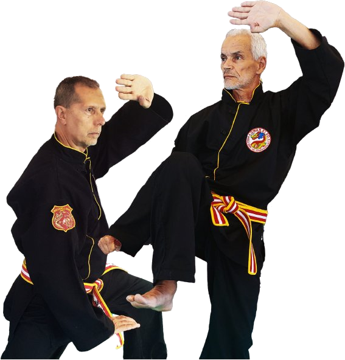
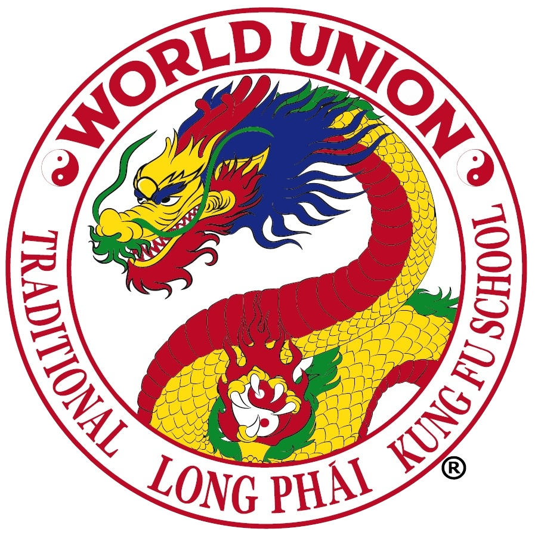

Un kung fu con radici vive.
Il kung fu che si pratica al Tay Son è un'arte marziale tradizionale cino-vietnamita. La sua denominazione tecnica attuale è Scuola Long Phái Kung Fu, nome con cui la World Union of Qwan Ki Do and Sino-Vietnamese Martial Arts (WUQKD) coordina a livello internazionale un corpus tecnico codificato che integra stili cinesi e vietnamiti secolari.
Non è un metodo di efficacia neutra. È un percorso tecnico che porta con sé una posizione etica: studio del corpo, educazione del carattere, rispetto del partner e del maestro, coltivazione dell'energia vitale. La via conta quanto la tecnica.
Da dove viene
Le radici affondano nella storia del Vietnam e dell'antica Cina: una duplice origine che dà alla scuola una ricchezza sia marziale che culturale, e che si rinnova nel confronto con le realtà sociali in cui viene trasmessa.
La Scuola Long Phái Kung Fu non è il prodotto di un singolo stile. È una ricomposizione di tradizioni diverse, ognuna con il proprio carattere tecnico e il proprio repertorio. Gli stili storici che confluiscono nel programma sono:
- Thieu Lam (Shaolin) — l'antica tradizione cinese del Monastero Shaolin, radice classica del kung fu del nord.
- Nga Mi (Wo Mei) — stile dei Monti Emei, caratterizzato da tecniche agili e da una forte componente interna.
- Tang Lang (Duong Lang) — la "Mantide Religiosa", stile di rapida catena di attacchi e prese.
- Quan Ky — stile del repertorio cino-vietnamita, con un lavoro specifico sulle distanze medie.
- Bach Hac (Gru Bianca) — stile ispirato al movimento dell'uccello, lavora su leggerezza, precisione, cambi di angolo.
Quello che arriva al praticante non è un collage, ma un programma organico: questi riferimenti storici sono il materiale con cui la scuola ha costruito un metodo didattico coerente e trasmissibile.
In Italia questo progetto è portato avanti dall'Unione Italiana Qwan Ki Do, presente dal 1981, oggi sotto la direzione tecnica del Maestro Roberto Vismara. Il Tay Son Vigevano è un club affiliato e ne condivide fondamenti tecnici, ordinamento didattico e riferimenti valoriali.

Una direzione tecnica a due voci.
La direzione tecnica della World Union of Qwan Ki Do and Sino-Vietnamese Martial Arts è rappresentata e coordinata dal Maestro Roberto Vismara e dal Maestro Lahcen Gajdibbi, con il contributo dei Consiglieri Tecnici dell'Accademia Phuong Long.
Il Maestro Vismara è custode della tradizione sino-vietnamita, con una prospettiva umanista e universale sulle arti marziali. Il Maestro Gajdibbi rappresenta la dimensione internazionale della scuola, riferimento per la disciplina tecnica e la lealtà ai valori tradizionali. La loro unione simboleggia l'armonia e l'equilibrio del Drago: saggezza e potere, tradizione e visione aperta.

World Union Long Phái Kung Fu
Traditional Sino-Vietnamese Kung Fu School
Cosa si pratica
Il programma tecnico è ampio. Un praticante lavora — con proporzioni diverse a seconda del livello, dell'età e del settore — su ambiti distinti ma interconnessi:
- Tecniche di percussione — calci, pugni, gomiti, ginocchia. Studio di distanze, angoli, tempi.
- Tecniche di presa — leve, proiezioni, spazzate, forbici. La parte di controllo del corpo dell'avversario.
- Thao Quyên (forme) — progressioni codificate che costituiscono l'archivio tecnico della scuola. Sono la memoria fisica e la garanzia di trasmissione.
- Cổ Võ Đạo — armi tradizionali — armi di legno, da taglio, snodate; lunghe, corte e rare. Un capitolo a sé che affina postura, centralità e precisione.
- Phong Ve — difesa personale — tecniche convenzionali che permettono di evitare o, se necessario, neutralizzare un'aggressione. Morfologicamente adattabile a ogni individuo.
- Vo Dai — combattimento tradizionale — combattimento libero con controllo, base delle competizioni sportive. Sviluppa equilibrio, sensibilità al contatto, lettura del ritmo.
- Tam The — ginnastica psico-corporale — lavoro sull'energia interna (Am/Duong), movimenti morbidi, sviluppo di meccanismi di autodifesa contro stress e affaticamento.
- Vu Lan — danza del Liocorno — danza tradizionale cerimoniale, eseguita in occasioni di festa e nelle esibizioni della scuola.
La Scuola Long Phái non è solo un'attività motoria: è un metodo educativo del corpo e della mente, un equilibrio tra tradizione e modernità, tra forza e flessibilità, tra azione e saggezza.
Il simbolo: il Drago
Il simbolo della scuola è il Drago — Lac Long — che rappresenta lo spirito cavalleresco. Tutti i praticanti portano lo stemma sul Vo Phuc all'altezza del cuore, indipendentemente dalla nazionalità. Attorno al Drago i cerchi dell'Am e del Duong indicano l'armonia tra corpo e spirito. La maschera del Drago è composta di cinque parti — terzo occhio, occhi, naso, bocca, denti — ciascuna legata a una qualità: intuizione, rettitudine, respirazione, perseveranza, forza.
Il saluto: Bai
Il saluto della scuola — Bai — è il gesto che apre e chiude ogni pratica. Mano sinistra aperta (il vuoto, l'aspetto Am) e mano destra chiusa (il pieno, l'aspetto Duong) si congiungono a simboleggiare l'equilibrio tra forza e pace: il pugno chiuso, avvolto dalla mano aperta, rappresenta l'essere umano sottomesso alla legge dell'Universo. È una forma concreta, non decorativa: entra nella lezione dal primo giorno.
I gradi
L'ordinamento dei gradi accompagna il praticante lungo tutto il percorso, adattandosi all'età: câp gialli per i bambini (4–6 anni), câp rossi (7–12), cintura viola / câp bianchi nel passaggio all'adolescenza, câp blu dai 13 anni, fino alla cintura blu di assistente istruttore (4° blu) e successivamente ai livelli di cintura nera, articolati dal 1° al 9° Dang.
Perché un'arte tradizionale, oggi
La domanda è legittima. In un panorama dominato da discipline di combattimento sportivo, che senso ha investire tempo su un sistema che chiede anni per essere posseduto davvero?
La risposta non è nostalgica. Un'arte tradizionale non è vecchia — è strutturata. Ha un ordinamento di gradi che scandisce un percorso lungo. Ha un vocabolario gestuale che va oltre la singola funzione sportiva. Ha una filosofia che non è decorazione ma impalcatura: regge quello che si costruisce nel tempo.
Per un bambino significa crescere dentro una cornice stabile. Per un adulto significa tornare ad avere un'occupazione fisica seria che non sia solo una sessione in palestra. Per tutti significa appartenere a qualcosa di più ampio della propria pratica personale.
Cinque vettori su cui si lavora in palestra.
Non sono slogan. Sono i punti a cui torniamo ogni volta che un allenamento deve decidere la propria direzione.
Postura e radici
Prima della tecnica c'è la posizione. Un corpo mal radicato non trasmette nulla, per quanto veloce.
Ki e respirazione
Il lavoro sul ki non è misticismo: è imparare a gestire respiro, tensione e rilascio in movimento.
Precisione prima di potenza
La forza arriva dopo. Prima si costruisce la qualità del gesto. È un ordine non negoziabile.
Il partner come maestro
Ogni allenamento a coppia è un'occasione didattica reciproca. Il rispetto è metodo, non etichetta.
Il lungo periodo
La Scuola Long Phái non si impara in una stagione. Accettarlo è già parte della pratica.
Tutti insieme
Questi cinque vettori non vivono isolati. Un buon allenamento li tiene sempre tutti in tensione.
Il modo migliore per capirlo è provarlo.
Vieni a un allenamento. Una sola lezione basta per farsi un'idea concreta, senza spiegazioni astratte.